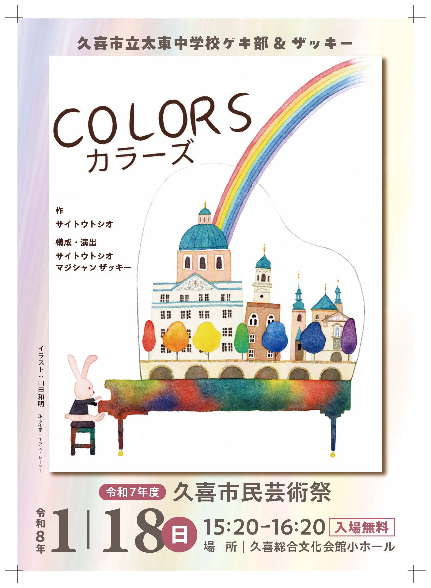
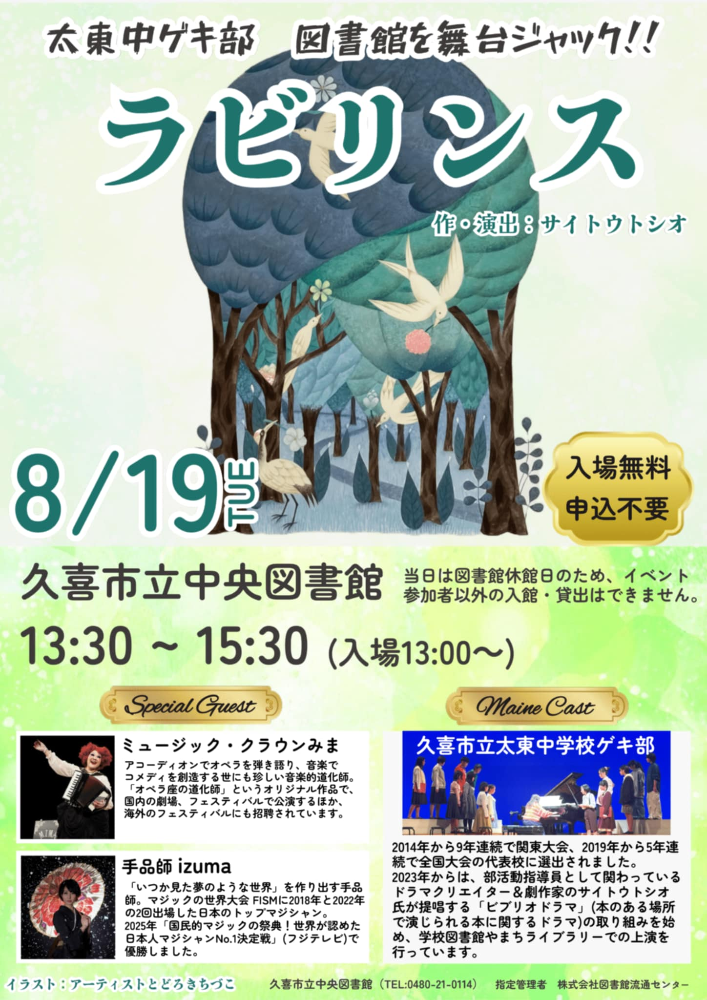
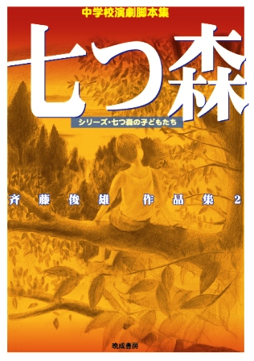
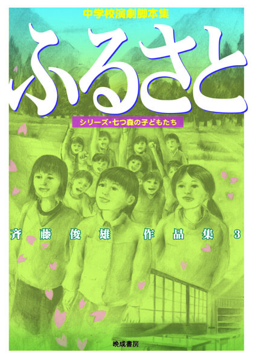
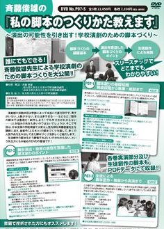

七つ森
管理人・サイトウトシオ(斉藤俊雄)紹介
ドラマクリエイター 劇作家 久喜市部活動指導員(演劇)
中学校・高校での自作上演は千回以上
晩成書房戯曲賞・特賞「降るような星空」
ＮＨＫ後援第１６回テレビドラマ脚本公募佳作１席「夏休み」
指導した演劇部・ゲキ部は関東大会、全国大会へ出場している。
◆自作作品集「夏休み」「七つ森」「ふるさと」「ばたふらい」(晩成書房)
■演劇指導ＤＶＤ「感情に台詞を乗せる即興を活かした演劇指導術」(ジャパンライム社)
■脚本創作のためのＤＶＤ「私の脚本の作り方教えます」(ジャパンライム社)
■上演ＤＶＤ「ふるさと」(ジャパンライム社)
昭和３５年生まれ。大学時代はマジック研究会に所属。プロのマジシャンと交流を持ち、学生マジシャン代表の一人としてステージに立ったこともある。劇の構成にマジック的な発想があるのはその影響である。 昭和５８年に中学校の教員となり、教員２年目から演劇部の顧問となる。その中で脚本創作を始め現在に至る。専門は英語。緑・花文化の認定試験１級。現在は久喜市の部活動指導員(演劇)として久喜市の中学校で演劇の指導をしている。
ビブリオドラマ(本のある場所で上演する本に関する劇)や絵本ドラマリーディング、その２つを合わせた「ビブリオ劇場」という取り組みを本のある場所(図書館、図書室、書店、まちライブラリー)で行っている。
上演スタイルの１つにSHO-GEKIがある。
SHO-GEKIは小劇(５分以内の短い劇)、笑劇(笑いのある劇)、Show劇(合唱、ダンス、マジックなどを取り入れたShowの劇、)衝撃(衝撃を与える劇)の４つの意味がある。
ドラマクリエイター 劇作家 久喜市部活動指導員(演劇)
中学校・高校での自作上演は千回以上
晩成書房戯曲賞・特賞「降るような星空」
ＮＨＫ後援第１６回テレビドラマ脚本公募佳作１席「夏休み」
指導した演劇部・ゲキ部は関東大会、全国大会へ出場している。
◆自作作品集「夏休み」「七つ森」「ふるさと」「ばたふらい」(晩成書房)
■演劇指導ＤＶＤ「感情に台詞を乗せる即興を活かした演劇指導術」(ジャパンライム社)
■脚本創作のためのＤＶＤ「私の脚本の作り方教えます」(ジャパンライム社)
■上演ＤＶＤ「ふるさと」(ジャパンライム社)
昭和３５年生まれ。大学時代はマジック研究会に所属。プロのマジシャンと交流を持ち、学生マジシャン代表の一人としてステージに立ったこともある。劇の構成にマジック的な発想があるのはその影響である。 昭和５８年に中学校の教員となり、教員２年目から演劇部の顧問となる。その中で脚本創作を始め現在に至る。専門は英語。緑・花文化の認定試験１級。現在は久喜市の部活動指導員(演劇)として久喜市の中学校で演劇の指導をしている。
ビブリオドラマ(本のある場所で上演する本に関する劇)や絵本ドラマリーディング、その２つを合わせた「ビブリオ劇場」という取り組みを本のある場所(図書館、図書室、書店、まちライブラリー)で行っている。
上演スタイルの１つにSHO-GEKIがある。
SHO-GEKIは小劇(５分以内の短い劇)、笑劇(笑いのある劇)、Show劇(合唱、ダンス、マジックなどを取り入れたShowの劇、)衝撃(衝撃を与える劇)の４つの意味がある。
脚本・シナリオの受賞歴(最終選考に残ったものも含めて)
- 夏休み 第16回創作テレビ脚本公募(NHK後援)佳作一席(第２位) (応募数682篇) 「夏休み」選考までの過程を見るには ここをクリック(「シナリオ・マガジン ドラマ1991年11月号」掲載)
- 降るような星空 １９９３年子どもが上演する劇 脚本募集 特選・晩成書房戯曲賞
- ときめきよろめきフォトグラフ 第６回フジテレビヤングシナリオ大賞最終選考(最後の９人 応募数1849篇)
- 春一番 ２００８年子どもが上演する劇 脚本募集 入選
- 青空 ２００７年子どもが上演する劇 脚本募集 入選
- ずっとそばにいるよ ２０１６関東中学校演劇コンクール 創作脚本賞
- アトム ２０１４関東中学校演劇コンクール 創作脚本賞 s
- ふるさと ２０１２関東中学校演劇コンクール 創作脚本賞
- 化鳥伝説 １９９６年子どもが上演する劇 脚本募集 入選
- 遙かなりわが地球 １９９４年子どもが上演する劇 脚本募集 入選
- ＬＯＶＥ 第44回埼玉県高等学校演劇中央大会 創作脚本賞
- 山姥伝説 神奈川芸術祭第15回演劇脚本コンクール最終選考 ※「山姥伝説」は現在「赤と青のレクイエム」という題で上演している。
演劇部関係・劇
- ２０２５年 『演劇的読み聞かせvol.1』演出・斉藤俊雄 (久喜市立太東中学校ゲキ部)
久喜市立中央図書館で演劇的な絵本の読み聞かせを行う →「ビブリオ劇場」に発展 - ２０２５年 『ラビリンス』作・斉藤俊雄(久喜市立太東中学校ゲキ部＆みまさん＆izumaさん)
久喜市立中央図書館の休館日に図書館を貸し切っての上演 ★図書館雑誌、読売新聞で紹介される - ２０２５年 『カンパネラ』作・斉藤俊雄 (久喜市立太東中学校ゲキ部 ＆光木彩乃さん)
ブックハウスカフェ(日本の絵本の聖地)での上演 ★ビブリオドラマの上演が広がる - ２０２４年 『ビブリオドラマ２０２４』作・斉藤俊雄 (久喜市立太東中学校ゲキ部)
まちライブラリー@アトリア参宮橋での上演 ★本のある場所での上演ビブリオドラマの取り組み開始 - ２０２３年 『セブン』作・斉藤俊雄 (久喜市立太東中学校ゲキ部)
全国大会(沖縄)出場 第２０回関東中学校演劇コンクール 銅賞 - ２０２２年 『ゲキを止めるな！ヒーロー編』作・斉藤俊雄 (久喜市立太東中学校ゲキ部)
全国大会（福岡）映像での参加 第１９回関東中学校演劇コンクール 銀賞 - ２０２１年 『応援歌』作・斉藤俊雄 (久喜市立太東中学校ゲキ部)
全国大会（岩手）出場 第１8回関東中学校演劇コンクール 金賞 - ２０２０年 『ゲキを止めるな！』作・斉藤俊雄 (久喜市立太東中学校ゲキ部)
全国大会（福岡）へ推薦される 第１７回関東中学校演劇コンクール ※コロナのために大会は中止 - ２０１９年 『イマジン』作・斉藤俊雄 (久喜市立太東中学校ゲキ部)
全国大会（富山）出場 第１６回関東中学校演劇コンクール 銀賞 - ２０１８年 『つばさ』作・斉藤俊雄 (久喜市立太東中学校演劇部)
第１５回関東中学校演劇コンクール 銀賞 - ２０１７年 『なつの思い出』作・斉藤俊雄 (久喜市立太東中学校演劇部)
全国大会（神奈川）出場 第１４回関東中学校演劇コンクール 銀賞 - ２０１６年 『ずっとそばにいるよ』作・斉藤俊雄 (久喜市立太東中学校演劇部)
第１３回関東中学校演劇コンクール 銀賞 - ２０１５年 『Happy Birthday』作・斉藤俊雄 (久喜市立太東中学校演劇部)
第１２回関東中学校演劇コンクール 銀賞 - ２０１４年 『アトム』作・斉藤俊雄 (久喜市立太東中学校演劇部)
全国大会（沖縄）出場 第１１回関東中学校演劇コンクール 金賞 - ２０１２年 『ふるさと』作・斉藤俊雄(久喜市立久喜中学校演劇部)
全国大会（栃木）出場 第９回関東中学校演劇コンクール 金賞 - ２０１1年 『とも』作・斉藤俊雄(久喜市立久喜中学校演劇部)
第８回関東中学校演劇コンクール 会長賞
※東日本大震災のためコンクールは中止。すべての出場校が会長賞を受賞。 - ２０１０年 『七つ森』作・斉藤俊雄(久喜市立久喜中学校演劇部)
第７回関東中学校演劇コンクール 金賞 ※この年から賞が金賞・銀賞・銅賞に変更となる - ２００９年 『ザネリ』作・斉藤俊雄(久喜市立久喜中学校演劇部)
第６回関東中学校演劇コンクール 優秀賞 - ２００８年 『春一番』作・斉藤俊雄(久喜市立久喜中学校演劇部)
第５回関東中学校演劇コンクール 最優秀賞 - ２００７年 『降るような星空』作・斉藤俊雄(久喜市立久喜中学校演劇部)
第４回関東中学校演劇コンクール 優秀賞 - ２００６年 『青空』作・斉藤俊雄(久喜市立久喜中学校演劇部)
第３回関東中学校演劇コンクール 最優秀賞 - ２００５年 『なっちゃんの夏』作・斉藤俊雄(久喜市立久喜中学校演劇部)
第２回関東中学校演劇コンクール 優秀賞 - ２００４年 『ときめきよろめきフォトグラフ』作・斉藤俊雄(久喜市立久喜中学校演劇部)
第１回関東中学校演劇コンクール 最優秀賞 - 彩の国青少年グローリー賞受賞(久喜市立太東中学校演劇部)
演劇部関係・ジャズダンスコンテスト
- 第３回さいたま芸術文化祭ジャズダンスコンテスト部門 「ラグ・タイム・ダンス」埼玉県知事賞 (蓮田市立黒浜中学校)
- 第４回さいたま芸術文化祭ジャズダンスコンテスト部門 「サンダーストーム」 埼玉県教育長賞 (久喜市立太東中学校)
- 第２回さいたま芸術文化祭ジャズダンスコンテスト部門 「ザ・カムイ」 北川辺教育長賞(蓮田市立黒浜中学校)
自作脚本集
- 斉藤俊雄作品集３「ふるさと〜シリーズ・七つ森の子どもたち〜」
「ふるさと」
「アトム」
「Happy Birthday」
「赤と青のレクイエム」
「夏休み」〜戦後七十年改訂バージョン〜【戦争三部作】
「私の青空」〜「青空」 戦後七十年バージョン〜【戦争三部作】
「ずっとそばにいるよ」【戦争三部作】
晩成書房 ２０１６年６月出版 - 斉藤俊雄作品集２「七つ森〜シリーズ・七つ森の子どもたち〜」
『七つ森』
『とも』
『ザネリ』
『怪談の多い料理店』
『魔術』
『森の交響曲(シンフォニー)』
晩成書房 ２０１１年１１月出版 - 斉藤俊雄脚本集「夏休み〜シリーズ七つ森の子どもたち〜」
「夏休み」
「青空」
「なっちゃんの夏」
「ときめきよろめきフォトグラフ」
「降るような星空」
「春一番」
「斉藤俊雄作品集 夏休み」後書き 春一番が吹いた日に〜後書きのためのインタビュー〜
晩成書房 ２００９年３月出版
演劇指導・上演劇DVD◆詳しくはジャパンライム社の演劇サイトで
- 『感情に台詞を乗せる！即興を活かした演劇指導術
〜久喜中演劇部・斉藤俊雄先生の取り組み〜』 ジャパンライム社から2011年6月に発売
- 斉藤俊雄の 私の脚本のつくりかた教えます
〜演出の可能性を引き出す！学校演劇のための脚本づくり〜」ジャパンライム社から2012年10月18日に発売
- Live 中学校演劇シリーズ 舞台「ふるさと」
(作・斉藤俊雄 上演・久喜中学校演劇部) ジャパンライム社から2012年10月18日に発売
演劇脚本集収録脚本集・雑誌
- 演劇と教育No.447 (晩成書房・1993.7) 「降るような星空」子どもが上演する劇 脚本募集・ 晩成書房戯曲賞作品として
- 演劇と教育No.451(晩成書房・1993.11) 「狐」脚色 南吉童話を劇化する。
- 演劇と教育No.462 (晩成書房・1994.9) 「遙かなりわが地球」
- 演劇と教育No.475 (晩成書房・1995.8.9)「森の交響曲」脚本と実践記録
- 演劇と教育No.487 (晩成書房・1996.10)「化鳥伝説」(上)
- 演劇と教育No.488 (晩成書房・1996.11)「化鳥伝説」(下)
- 演劇と教育No.538 (晩成書房・2001.10) 「雪物語」
- 演劇と教育(晩成書房2004年１０月号)「ときめきよろめきフォトグラフ」
- 演劇と教育(晩成書房・2005年１０月号)「なっちゃんの夏」
- 演劇と教育(晩成書房・2007年８＋９月号)「青空」
- 「中学生のドラマ７(晩成書房2006年) 」「ときめきよろめきフォトグラフ」
- 演劇と教育(晩成書房・2008.１０月号)「春一番」
- 最新中学校創作脚本集2009(晩成書房・2009年3月)「ザネリ」
- 『中学校たのしい劇脚本集 英語劇付Ⅰ』(国土社、日本演劇教育連盟・編 2010年)「魔術」
- 『中学校たのしい劇脚本集 英語劇付Ⅲ』(国土社、日本演劇教育連盟・編 2011年)「七つ森」
- 演劇と教育(晩成書房・2012.４月号)「ふるさと」
- 「中学生のドラマ１０ 絆 北から南から」( (晩成書房2012年)「ふるさと」
- 演劇と教育(晩成書房・2013.６月号)「応援歌」
- 最新中学校創作脚本集2015(晩成書房・2015年)「アトム」
- 最新中学校創作脚本集2016(晩成書房・2016年)「Happy Birthday」
- 最新中学校創作脚本集2018(晩成書房・2018年3月)「なつの思い出」
- 中学校創作脚本集2018(晩成書房・2018年)「つばさ」
- 中学校創作脚本集2019(晩成書房・2019年)「イマジン」
- 中学校創作脚本集2020(晩成書房・2020年)「ゲキを止めるな！」「ＳＨＯ-ＧＥＫＩ作品集」
- 中学校創作脚本集2021(晩成書房・2021年)「応援歌」
- 中学校創作脚本集2022(晩成書房・2022年)「ゲキを止めるな！ヒーロー編」
- 中学校創作脚本集2023(晩成書房・2023年)「バタフライ」
- 中学校創作脚本集2024(晩成書房・2024年)「セブン」
- 中学校創作脚本集2025(晩成書房・2025年)「ビブリオドラマ作品集」
演劇関係・エッセイ、インタビュー、受賞関連記事
- シナリオ・マガジン ドラマ1991年１１月号 (映人社) 創作テレビドラマ脚本公募受賞作発表
「夏休み」佳作一席受賞 作者の言葉と選考過程 - シナリオ・マガジン ドラマ1994年2月号 (映人社)第６回フジテレビヤングシナリオ大賞受賞作発表
「ときめきよろめきフォトグラフ」の最終選考に残るまでの選考過程と批評。 - 宮澤賢治童話劇場２「銀河鉄道の夜」(1996 国土社) 川村光夫・作「銀河鉄道の夜への旅」の解説と演出ノートを担当
- 演劇と教育No.556 (晩成書房・2003.7)『ドラマ・スキル』(レスリー・クリステン著)の書評
- 演劇と教育(晩成書房・2004年1＋2月号)エッセイ「Yesから見つめる子どもの上演劇」
- 演劇と教育(晩成書房・2009年８＋９月号) エッセイ 「春一番に向かって歩く」
- 演劇と教育(晩成書房2011年10月号) 架空脚本講座「子どものための脚本の書き方〜七つ森の子どもたちを通して〜」
- 日本照明家協会雑誌 2012年５月号 巻頭特集 インタビュー
- 久喜 地域みっちゃく生活情報誌 クッキーズ２０１６年７月号 巻頭特集・中学生演劇の輝き 久喜市立太東中学校
- 演劇と教育(晩成書房2016年11月号) 実践記録 「ふるさと」とともに歩く
ビブリオドラマ最新作 「カラーズ」

久喜市立中央図書館上演
ビブリオドラマ「ラビリンス」

ビブリオドラマ「ラビリンス」 
ブックハウスカフェ上演
ビブリオドラマ「カンパネラ」 
サイトウトシオ作品集 「バタフライ」 
斉藤俊雄作品集 「夏休み」 
斉藤俊雄作品集２「七つ森」

斉藤俊雄作品集３「ふるさと」

斉藤俊雄・演劇指導DVD
「感情に台詞を乗せる！即興を活かした演劇指導術」

ジャパンライム社
斉藤俊雄・脚本づくりDVD
「私の脚本の創り方教えます」

ジャパンライム社
久喜中学校演劇部「ふるさと」DVD

ジャパンライム社